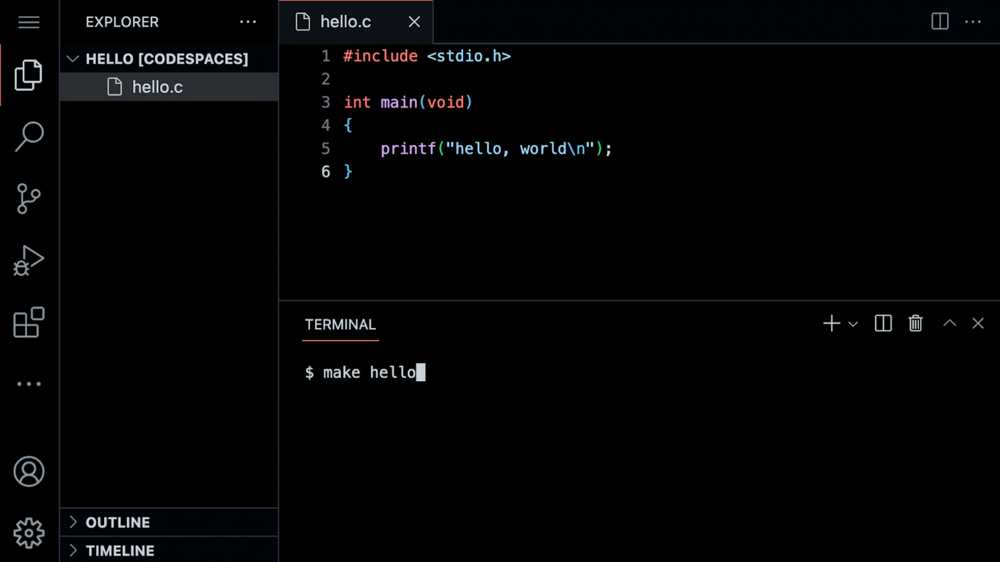
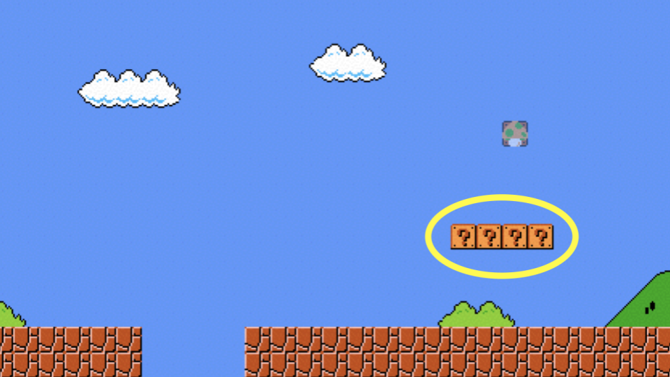
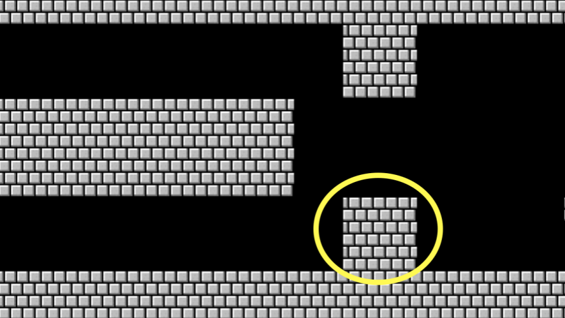

Week 1
C. Código-fonte. Código de máquina. Compilador. Correção, Design, Estilo. Visual Studio Code. Realce de sintaxe. Sequências de escape. Arquivos de cabeçalho. Bibliotecas. Documentação. Tipos. Condicionais. Variáveis. Loops. Linux. Interface gráfica do usuário (GUI). Interface de linha de comando (CLI). Constantes. Comentários. Pseudo-código. Operadores. Estouro de inteiro. Imprecisão de Ponto Flutuante.
- Shorts
- Lab 1
- Problem Set 1
Notas
- Bem-vindo!
- Olá Mundo
- Funções
- Variáveis
- Condicionais
- Laços
- Linux e a Linha de Comando
- Mario
- Comentários
- Abstração
- Operadores e Tipos
- Resumindo
Bem-vindo!
- Na nossa sessão anterior, aprendemos sobre Scratch, uma linguagem de programação visual.
- De fato, todos os conceitos essenciais de programação apresentados no Scratch serão utilizados ao aprender a programar qualquer linguagem de programação.
- Lembre-se de que as máquinas só entendem binário. Enquanto os humanos escrevem código fonte, uma lista de instruções para o computador que é legível para humanos, as máquinas só entendem o que podemos agora chamar de código de máquina. Este código de máquina é um padrão de uns e zeros que produz um efeito desejado.
- Acontece que podemos converter código fonte em
código de máquinausando um software muito especial chamado de compilador. Hoje, estaremos apresentando a você um compilador que permitirá converter código fonte na linguagem de programação C em código de máquina. - Hoje, além de aprender sobre como programar, você estará aprendendo sobre como escrever um bom código.
- O código pode ser avaliado em três eixos. Primeiro, a correção se refere a "o código roda como pretendido?" Segundo, o design se refere a "quão bem o código foi projetado?" Finalmente, o estilo se refere a "quão esteticamente agradável e consistente é o código?"
Olá Mundo
- O compilador utilizado neste curso é o Visual Studio Code, carinhosamente referido como *VS Code*.
- Uma das razões mais importantes para utilizarmos o VS Code é que ele já tem todo o software necessário para o curso pré-carregado nele. Este curso e as instruções aqui foram projetados com o VS Code em mente. É sempre melhor utilizar o VS Code para as atribuições deste curso.
- Você pode abrir o VS Code em code.cs50.io.
-
A IDE pode ser dividido em várias regiões:
Observe que há um explorador de arquivos no lado esquerdo, onde você pode encontrar seus arquivos. Além disso, observe que há uma região no meio chamada de editor de texto, onde você pode editar seu programa. Finalmente, há uma
interface de linha de comando, conhecida como CLI, linha de comando ou janela de terminal, onde podemos enviar comandos para o computador na nuvem. -
Nós podemos construir o seu primeiro programa em C digitando
code hello.cna janela do terminal. Observe que colocamos todo o nome do arquivo em minúsculas de propósito e incluímos a extensão.c. Em seguida, no editor de texto que aparece, escreva o código a seguir:#include <stdio.h> int main(void) { printf("hello, world\n"); }Note que cada caractere acima tem um propósito. Se você digitá-lo incorretamente, o programa não será executado.
- Clicando de volta na janela do terminal, você pode compilar seu código executando
make hello. Observe que estamos omitindo.c.makeé um compilador que procurará nosso arquivohello.ce o transformará em um programa chamadohello. Se a execução desse comando resultar em nenhum erro, você pode prosseguir. Caso contrário, verifique seu código para garantir que corresponda ao acima. - Agora, digite
./helloe seu programa será executado dizendohello, world. - Agora, abra o explorador de arquivos à esquerda. Você notará que agora há um arquivo
chamado
hello.ce outro arquivo chamadohello.hello.cpode ser lido pelo compilador: é onde seu código é armazenado.helloé um arquivo executável que você pode executar, mas não pode ser lido pelo editor. -
Vamos examinar nosso código com mais cuidado:
#include <stdio.h> int main(void) { printf("hello, world\n"); }Observe que nosso código está destacado usando destaque de sintaxe.
Funções
- No Scratch, utilizamos o bloco
digapara exibir qualquer texto na tela. Na verdade, em C, temos uma função chamadaprintfque faz exatamente isso. -
Observe que nosso código já invoca essa função:
printf("hello, world\n");Observe que a função printf é chamada. O argumento passado para printf é 'hello, world\n'. A declaração de código é fechada com um
;. -
Um erro comum na programação em C é a omissão de um ponto e vírgula. Modifique seu código da seguinte maneira:
#include <stdio.h> int main(void) { printf("hello, world\n") }Observe que o ponto-e-vírgula agora desapareceu.
- Na janela do terminal, execute
make hello. Agora, você verá inúmeros erros! Ao colocar o ponto-e-vírgula de volta na posição correta e executarmake hellonovamente, os erros desaparecerão. - Observe também o símbolo especial
\nno seu código. Tente remover esses caracteres e compilar seu programa novamente executandomake hello. Ao digitar./hellona janela do terminal, como seu programa mudou? -
Restaure seu programa para o seguinte:
#include <stdio.h> int main(void) { printf("hello, world\n"); }Observe que o ponto-e-vírgula e o
\nforam restaurados. - A declaração no início do código
#include <stdio.h>é um comando muito especial que informa ao compilador que você deseja usar as capacidades da biblioteca chamadastdio.h. Isso permite que você, entre muitas outras coisas, utilize a funçãoprintf. Você pode ler sobre todas as capacidades dessa biblioteca nas Páginas do Manual. - Acontece que o CS50 possui sua própria biblioteca chamada
cs50.h. Vamos usar essa biblioteca no seu programa.
Variáveis
- Lembre-se que em Scratch, tínhamos a capacidade de perguntar ao usuário "Qual é o seu nome?" e dizer "olá" com aquele nome anexado a ele.
-
No C, podemos fazer o mesmo. Modifique seu código da seguinte forma:
#include <cs50.h> #include <stdio.h> int main(void) { string answer = get_string("Qual é o seu nome? "); printf("olá, %s\n", answer); }Observe que
#includefoi adicionado ao topo do seu código. A funçãoget_stringé usada para obter uma string do usuário. Em seguida, a variávelansweré passada para a funçãoprintf.%sdiz à funçãoprintfpara se preparar para receber umastring. answeré um lugar especial que chamamos de variável.answeré do tipostringe pode conter qualquer string dentro dele. Existem muitos tipos de dados, comoint,bool,chare muitos outros.- Executando
make hellonovamente na janela do terminal, você pode executar o seu programa digitando./hello. O programa agora pede o seu nome e, em seguida, diz "olá" com o seu nome anexado.
Condicionais
- Outro bloco de construção utilizado dentro do Scratch foi o de condicionais. Por exemplo, você pode querer fazer uma coisa se x for maior que y. Além disso, você pode querer fazer outra coisa se essa condição não for atendida.
-
Na janela do terminal, digite
code compare.ce escreva o seguinte código:#include <cs50.h> #include <stdio.h> int main(void) { int x = get_int("Qual é o valor de x? "); int y = get_int("Qual é o valor de y? "); if (x < y) { printf("x é menor que y\n"); } }Observe que criamos duas variáveis, um
intou inteiro chamadoxe outra chamaday. Os valores dessas variáveis são populados usando a funçãoget_int. - Você pode executar seu código executando
make comparena janela do terminal, seguido por./compare. Se receber mensagens de erro, verifique seu código em busca de erros. -
Podemos melhorar seu programa codificando da seguinte forma:
#include <cs50.h> #include <stdio.h> int main(void) { int x = get_int("Qual é o valor de x? "); int y = get_int("Qual é o valor de y? "); if (x < y) { printf("x é menor que y\n"); } else if (x > y) { printf("x is greater than y\n"); } else { printf("x is equal to y\n"); } }Observe que todos os possíveis resultados agora são considerados.
- Você pode recompilar e executar novamente o seu programa e testá-lo.
-
Considerando outro tipo de dado chamado
char, podemos começar um novo programa digitandocode agree.cna janela do terminal. No editor de texto, escreva o seguinte código:#include <cs50.h> #include <stdio.h> int main(void) { // Solicitar que o usuário concorde char c = get_char("Você concorda? "); // Verificar se o usuário concordou if (c == 'Y' || c == 'y') { printf("Concordou.\n"); } else if (c == 'N' || c == 'n') { printf("Não concordou.\n"); } }Observe que aspas simples são utilizadas para caracteres únicos. Além disso, observe que o
==garante que algo é igual a algo mais, onde um único sinal de igual teria uma função muito diferente em C. Finalmente, observe que||significa efetivamente ou. - Você pode testar seu código digitando
make agreena janela do terminal, seguido por./agree.
Loops
- Podemos utilizar também os blocos de loops do Scratch em nossos programas em C.
-
Na janela do seu terminal, digite
code meow.ce escreva o seguinte código:#include <stdio.h> int main(void) { for(int i = 0; i < 3; i++) { printf("meow\n"); } } -
Podemos alterar nosso programa modificando o código da seguinte forma:
#include <stdio.h> int main(void) { int i = 0; while (i < 3) { printf("meow\n"); i++; } }Observe que criamos uma variável
intchamadaie atribuímos a ela o valor0. Em seguida, criamos um loopwhileque será executado enquantoi < 3. Em seguida, o loop é executado. Toda vez que1é adicionado aiusando a instruçãoi++. -
Da mesma forma, podemos implementar uma contagem regressiva modificando nosso código da seguinte maneira:
#include <stdio.h> int main(void) { int i = 3; while (i > 0) { printf("meow\n"); i--; } }Observe como nosso contador
ié iniciado em3. Cada vez que o loop é executado, ele reduzirá o contador em1. Quando o contador for menor que zero, ele encerrará o loop. -
Podemos melhorar ainda mais o design usando um loop
for. Modifique seu código da seguinte maneira:#include <stdio.h> int main(void) { for (int i = 0; i < 3; i++) { printf("meow\n"); } }Observe que o loop
forinclui três argumentos. O primeiro argumentoint i = 0inicia nosso contador em zero. O segundo argumentoi < 3é a condição que está sendo verificada. Finalmente, o argumentoi++diz ao loop para incrementar em um cada vez que o loop for executar. -
Podemos até mesmo criar um loop infinito usando o seguinte código:
#include <cs50.h> #include <stdio.h> int main(void) { while (true) { printf("meow\n"); } }Observe que
trueserá sempre verdadeiro. Portanto, o código sempre será executado. Você perderá o controle da sua janela do terminal executando este código. Você pode interromper um loop infinito pressionandocontrol-Cem seu teclado.
Linux e a Linha de Comando
- Linux é um sistema operacional acessível por meio da linha de comando na janela do terminal no VS Code.
- Alguns argumentos comuns da linha de comando que podemos usar incluem:
cd, para mudar nosso diretório (pasta) atualcp, para copiar arquivos e diretóriosls, para listar arquivos em um diretóriomkdir, para criar um diretóriomv, para mover (renomear) arquivos e diretóriosrm, para remover (excluir) arquivosrmdir, para remover (excluir) diretórios
- O mais comumente usado é
ls, que lista todos os arquivos no diretório atual ou diretório. Vá em frente e digitelsna janela do terminal e pressioneenter. Você verá todos os arquivos na pasta atual. - Outro comando útil é o
mv, em que você pode mover um arquivo de um arquivo para outro. Por exemplo, você pode usar este comando para renomearHello.c(observe oHmaiúsculo) parahello.cdigitandomv Hello.c hello.c. - Você também pode criar pastas. Você pode digitar
mkdir pset1para criar um diretório chamadopset1. - Você pode então usar
cd pset1para mudar seu diretório atual parapset1.
Mario
- Tudo o que discutimos hoje foi focado em vários blocos de construção do seu trabalho como programador.
- O seguinte ajudará você a se orientar para trabalhar em um conjunto de problemas para esta aula em geral: como abordar um problema relacionado à ciência da computação?
-
Imagine que quiséssemos emular a visualização do jogo Super Mario Bros. Considerando os quatro blocos de pergunta da imagem, como poderíamos criar um código que representasse aproximadamente esses quatro blocos horizontais?

-
Na janela do terminal, digite
code mario.ce codifique da seguinte maneira:#include <stdio.h> int main(void) { for (int i = 0; i < 4; i++) { printf("?"); } printf("\n"); }Observe como quatro pontos de interrogação são impressos aqui usando um loop.
-
Da mesma forma, podemos aplicar essa mesma lógica para criar três blocos verticais.

-
Para realizar isso, modifique seu código da seguinte forma:
#include <stdio.h> int main(void) { for (int i = 0; i < 3; i++) { printf("#\n"); } printf("\n"); }Observe como três blocos verticais são impressos usando um loop.
-
E se quiséssemos combinar essas ideias para criar um grupo de blocos três por três?

-
Podemos seguir a lógica acima, combinando as mesmas ideias. Modifique seu código da seguinte forma:
#include <stdio.h> int main(void) { for (int i = 0; i < 3; i++) { for (int j = 0; j < 3; j++) { printf("#"); } printf("\n"); } }Observe que um loop está dentro do outro. O primeiro loop define qual linha vertical está sendo impressa. Para cada linha, são impressas três colunas. Depois de cada linha, uma nova linha é impressa.
-
E se quiséssemos garantir que o número de blocos a serem impressos seja constante, ou seja, imutável? Modifique seu código da seguinte forma:
#include <stdio.h> int main(void) { const int n = 3; for (int i = 0; i < n; i++) { for (int j = 0; j < n; j++) { printf("#"); } printf("\n"); } }Observe como agora
né uma constante. Ele nunca pode ser alterado. -
Como ilustrado anteriormente nesta palestra, podemos fazer nosso código solicitar ao usuário o tamanho da grade. Modifique seu código da seguinte forma:
#include <cs50.h> #include <stdio.h> int main(void) { int n; do { n = get_int("Size: "); } while (n < 1 || n > 8); for (int i = 0; i < n; i++) { for (int j = 0; j < n; j++) { printf("#"); } printf("\n"); } }Observe que
get_inté usado para solicitar entrada do usuário. -
Um conselho geral na programação é que você nunca deve confiar totalmente em seu usuário. Eles provavelmente se comportarão mal, digitando valores incorretos onde não deveriam. Podemos proteger nosso programa contra esse comportamento ruim verificando se a entrada do usuário atende às nossas necessidades. Modifique seu código da seguinte maneira:
#include <cs50.h> #include <stdio.h> int main(void) { int n; do { n = get_int("Size: "); } while (n < 1); for (int i = 0; i < n; i++) { for (int j = 0; j < n; j++) { printf("#"); } printf("\n"); } }Observe como o usuário é continuamente solicitado pelo tamanho até que a entrada do usuário seja 1 ou maior.
Comentários
- Comentários são partes fundamentais de um programa de computador, onde você deixa observações explicativas para si mesmo e para outros que podem estar colaborando com você em relação ao seu código.
- Todo o código que você criar para este curso deve incluir comentários robustos.
- Tipicamente, cada comentário é composto por algumas palavras ou mais, fornecendo ao leitor a oportunidade de entender o que está acontecendo em um bloco específico de código. Além disso, tais comentários servem como um lembrete para você mais tarde quando precisar revisar o seu código.
-
Comentários envolvem colocar
//no seu código, seguido de um comentário. Modifique o seu código como segue para integrar comentários:#include <cs50.h> #include <stdio.h> int main(void) { // Obter tamanho do grid int n; do { n = get_int("Tamanho: "); } while (n < 1); // Imprimir grid de tijolos for (int i = 0; i < n; i++) { for (int j = 0; j < n; j++) { printf("#"); } printf("\n"); } }Observe como cada comentário começa com
//.
Abstração
- Abstração é a arte de simplificar nosso código para lidar com problemas cada vez menores.
- Ao olhar para seu código, você pode ver como dois problemas essenciais em nosso código são obter o tamanho da grade e imprimir a grade de blocos.
-
Podemos abstrair esses dois problemas em funções separadas. Modifique seu código da seguinte forma:
#include <cs50.h> #include <stdio.h> int get_size(void); void print_grid(int n); int main(void) { int n = get_size(); print_grid(n); } int get_size(void) { int n; do { n = get_int("Tamanho: "); } while (n < 1); return n; } void print_grid(int n) { for (int i = 0; i < n; i++) { for (int j = 0; j < n; j++) { printf("#"); } printf("\n"); } }Observe que agora temos três funções. Primeiro, temos a função
mainque chama outras duas funções chamadasget_sizeeprint_grid. Segundo, temos uma segunda função chamadaget_size, que inclui o código exato que tínhamos para realizar esta tarefa anteriormente. Terceiro, temos outra função chamadaprint_gridque imprime a grade. Porque abstraímos os problemas essenciais em nosso programa, nossa funçãomainé muito curta.
Operadores e Tipos
-
Operadores referem-se às operações matemáticas suportadas pelo seu compilador. Em C, esses operadores matemáticos incluem:
+para adição-para subtração*para multiplicação/para divisão%para resto
- Tipos se referem aos possíveis dados que podem ser armazenados dentro de uma variável. Por
exemplo, um
charé projetado para acomodar um único caractere comoaou2. - Tipos são muito importantes porque cada tipo tem limites específicos. Por exemplo, devido aos
limites de memória, o valor mais alto de um
intpode ser4294967296. -
Tipos com os quais você pode interagir durante este curso incluem:
bool, uma expressão booleana de verdadeiro ou falsochar, um único caractere como a ou 2double, um valor de ponto flutuante com mais dígitos que um floatfloat, um valor de ponto flutuante, ou número real com um valor decimalint, inteiros até um certo tamanho, ou número de bitslong, inteiros com mais bits, para que possam contar mais do que um intstring, uma string de caracteres
-
Você pode implementar uma calculadora em C. No seu terminal, digite
code calculator.ce escreva o código da seguinte forma:#include <cs50.h> #include <stdio.h> int main(void) { // Solicita ao usuário o valor de x int x = get_int("x: "); // Solicita ao usuário o valor de y int y = get_int("y: "); // Realiza a adição printf("%i\n", x + y); }Observe como a função
get_inté utilizada duas vezes para obter um número inteiro do usuário. Um inteiro é armazenado na variável do tipointchamada dex. Outro é armazenado na variável do tipointchamada dey. Em seguida, a funçãoprintfimprime o valor dex + y, designado pelo símbolo%i. - Ao codificar, preste atenção especial aos tipos de variáveis que você está usando para evitar problemas no seu código.
Resumindo
Nesta lição, você aprendeu como aplicar os blocos de construção que aprendeu no Scratch à linguagem de programação C. Você aprendeu...
- Como criar seu primeiro programa em C.
- Funções pré-definidas que vêm nativamente com o C e como implementar suas próprias funções.
- Como usar variáveis, condicionais e loops.
- Como usar a linha de comando do Linux.
- Como abordar a resolução de problemas em ciência da computação.
- Como integrar comentários em seu código.
- Como abordar a abstração para simplificar e melhorar seu código.
- Como utilizar tipos e operadores.
Até a próxima!